Authors: Leader; selection_expert; biologist; system_manager; reporter
Affiliation: Pantheon Omics Expert Team, Pantheon-OS (https://pantheonos.stanford.edu/)
Project root: /home/erwinpi/pantheon-agents/examples/gene_panel_selection/cases/gene_panel_selection_immune
We constructed a publication-ready 1000-gene panel to profile the human tumor microenvironment (TME) for spatial transcriptomics deployment. Starting from a multi-tissue, multi-lineage single-cell reference (bioRxiv 2024 preprint, DOI 10.1101/2024.01.17.576110), we performed stratified downsampling to 50,000 cells and restricted features to 3,000 highly variable genes (HVGs). Five complementary selection strategies were applied on the active dataset: HVG stability across subsamples, differential expression (DE) for immune lineages and malignant vs other, SpaPROS, scGeneFit, and Random Forest feature importance. We aggregated evidence into a consensus ranking, then executed biologically guided curation to ensure coverage of immune lineages and states, cytokines/chemokines/checkpoints, malignant/epithelial markers, cancer pathway nodes, and cell state programs (cell cycle, DNA repair/stress, hypoxia/angiogenesis/EMT/ECM/vasculature). The final panel demonstrates strong separability on UMAPs using panel-only expression and provides interpretable markers for sentinel TME processes. This document reflects v2 of the curated panel and refreshed artifacts.
Spatially resolved transcriptomics in the tumor microenvironment requires compact, information-rich gene panels that capture immune composition, malignant programs, stromal states, and intercellular signaling. We assembled a 1000-gene human TME panel using a multi-study single-cell compendium (bioRxiv 2024; DOI: 10.1101/2024.01.17.576110) with expert curation. Our pipeline integrates complementary computational selection methods and domain knowledge to balance discriminative power and biological interpretability for Vizgen-style assays. We present the dataset, quality control (QC) and downsampling, selection methods and aggregation, final curation, and biological interpretation. Figures include QC diagnostics, method overlaps, UMAPs evaluated with draft and final panels, and classifier summaries.
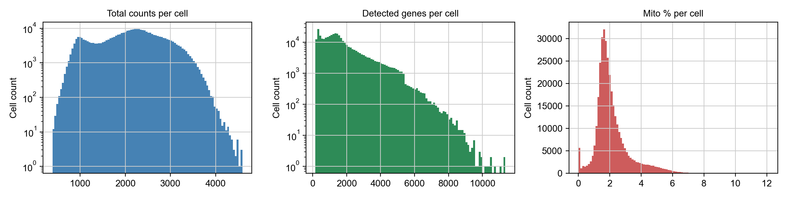
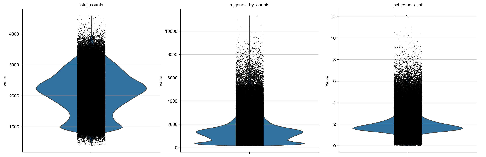
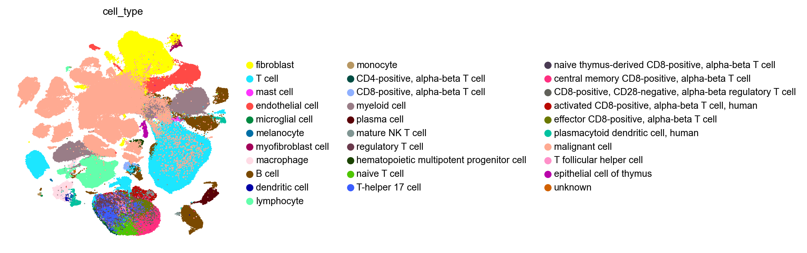
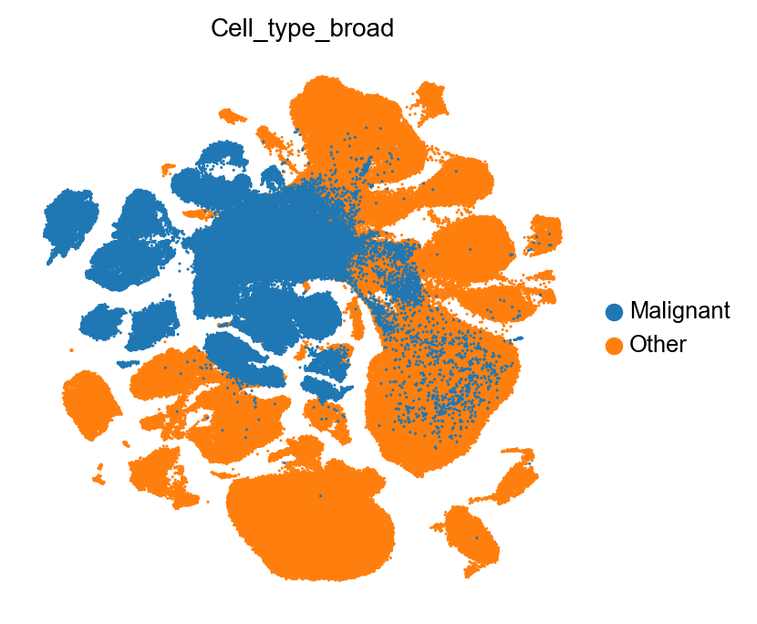
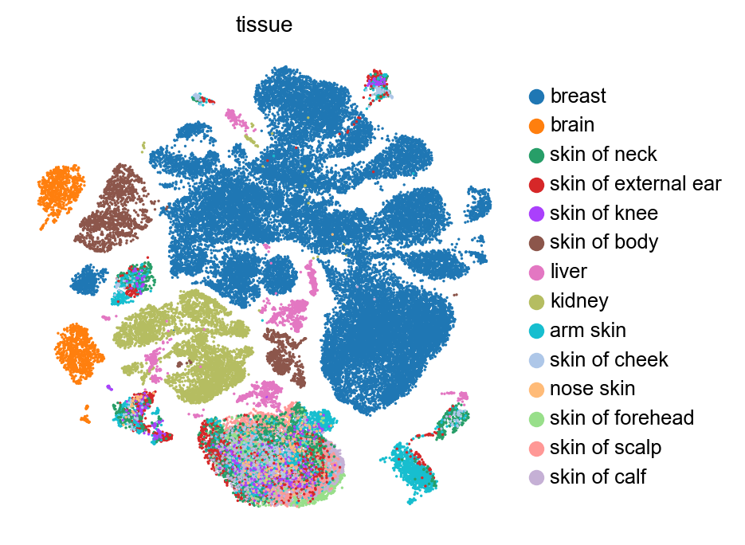
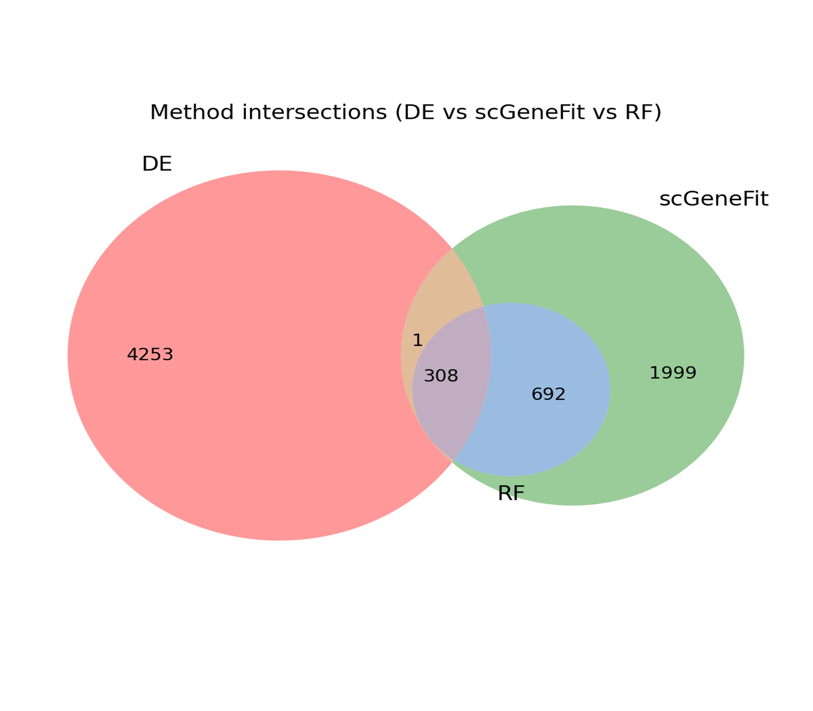
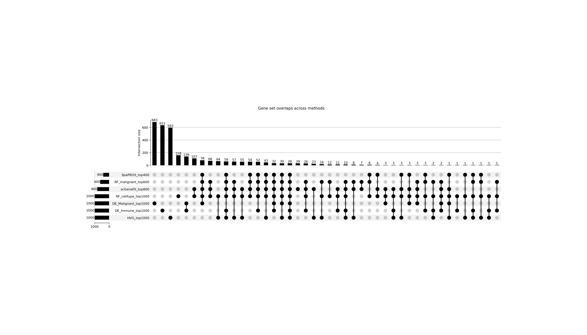
We combined evidence using a consensus score incorporating method presence (weighted), normalized ranks, and normalized scores (see Methods). Draft panels of sizes 500/800/1000/1200 were evaluated via panel-only UMAPs; the 1000-gene draft provided robust separability while preserving category coverage.
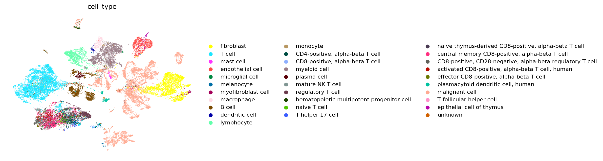
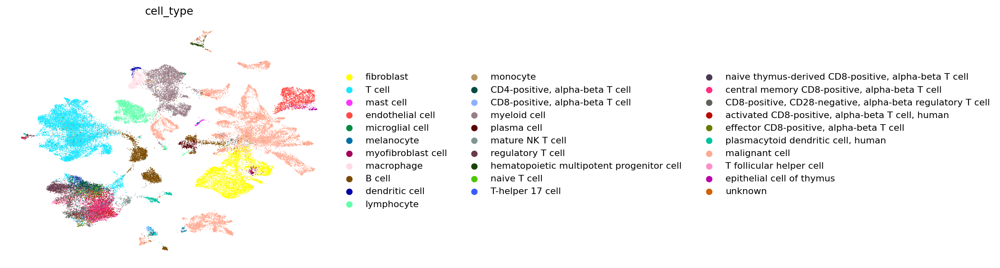
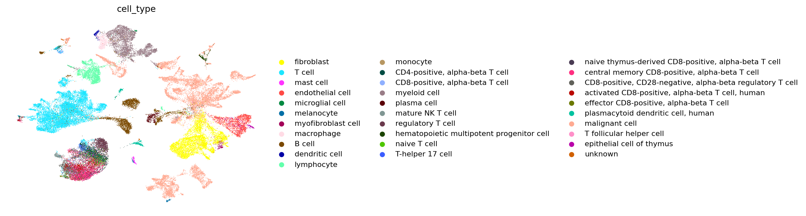
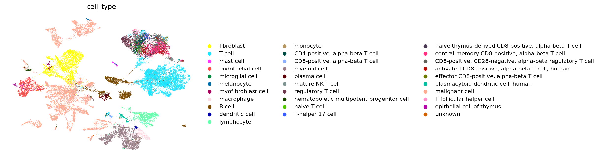
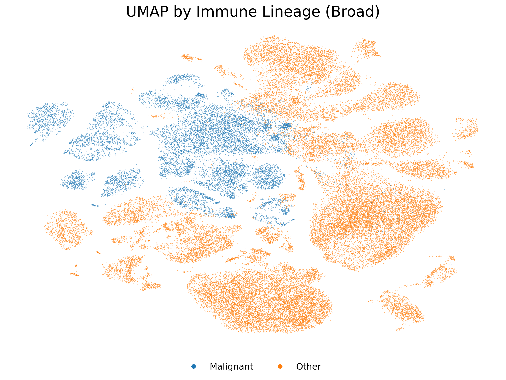
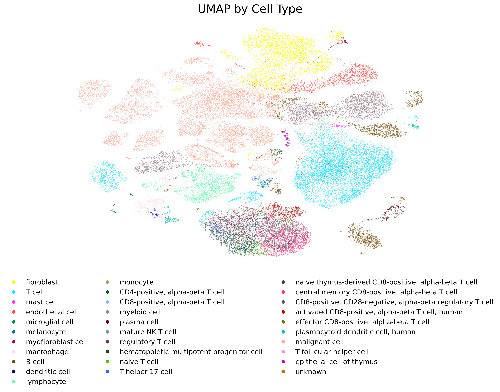
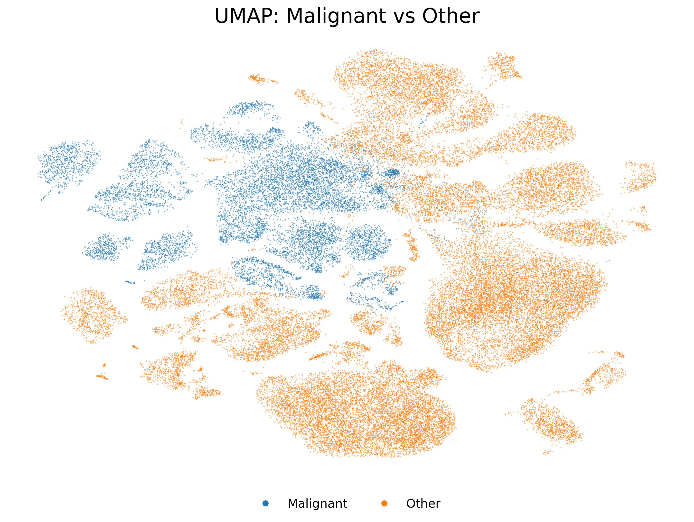
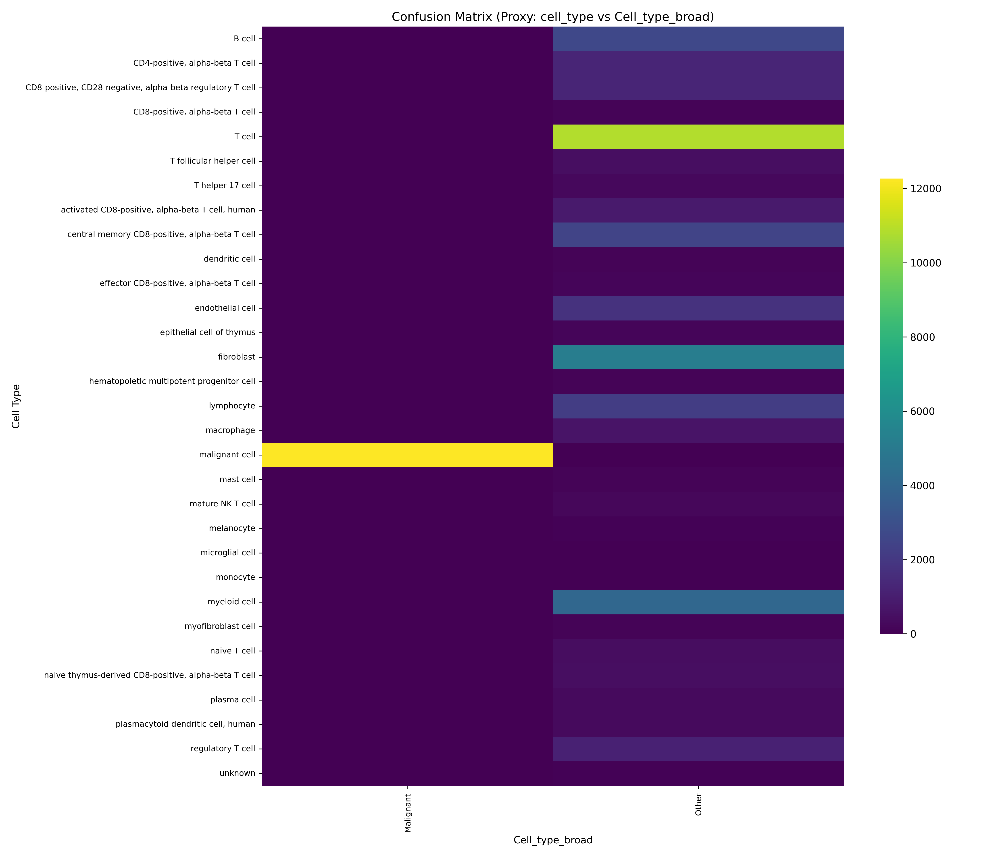
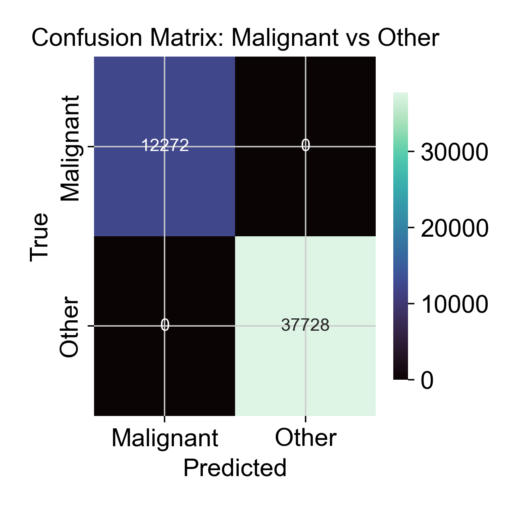
We provide a machine-readable panel with detailed columns and reproduce an excerpt with the requested fields, reflecting the v2 curated panel. Full CSV: reporter/recap_table.csv.
| Gene | Methods where it appears | Biological relevance (dataset context) | Relevance score |
|---|---|---|---|
| CD3E | Curated | T cell receptor complex marker | 3.34 |
| KRT19 | Curated | EMT Epithelial | 2.32 |
| COL1A1 | Curated | ECM Fibroblast | 2.32 |
| KRT18 | Curated | EMT Epithelial | 2.35 |
| S100A1 | Curated | High-ranking informative gene | 1.17 |
| COL1A2 | Curated | ECM Fibroblast | 2.29 |
| KRT8 | Curated | EMT Epithelial | 2.27 |
| CD2 | Curated | High-ranking informative gene | 2.15 |
| SPARC | Curated | ECM Fibroblast | 2.55 |
| DCN | Curated | ECM Fibroblast | 2.05 |
| CD24 | Curated | High-ranking informative gene | 1.45 |
| LUM | Curated | ECM Fibroblast | 1.98 |
| CALD1 | Curated | High-ranking informative gene | 1.60 |
| SFRP2 | Curated | High-ranking informative gene | 1.10 |
| SPOCK2 | Curated | High-ranking informative gene | 1.89 |
| TYROBP | Curated | High-ranking informative gene | 1.36 |
| CST7 | Curated | High-ranking informative gene | 1.95 |
| CD7 | Curated | High-ranking informative gene | 1.97 |
| CD3D | Curated | T cell receptor complex marker | 3.20 |
| SPARCL1 | Curated | High-ranking informative gene | 1.20 |
| IL7R | Curated | Immune other marker | 2.93 |
| MS4A1 | Curated | B cell marker | 2.36 |
| NKG7 | Curated | NK cytotoxic marker | 2.89 |
| CD69 | Curated | Immune other marker | 2.96 |
| FCER1G | Curated | High-ranking informative gene | 1.27 |
| CCDC80 | Curated | High-ranking informative gene | 1.10 |
| AIF1 | Curated | High-ranking informative gene | 1.17 |
| COL5A2 | Curated | ECM Fibroblast | 1.89 |
| TM4SF1 | Curated | High-ranking informative gene | 1.26 |
| BGN | Curated | High-ranking informative gene | 1.34 |
From curation notes: adds and drops applied in v2.
Our consensus-driven, curated panel provides broad coverage of TME cell lineages and states and key cancer pathway readouts, suitable for spatial assays. The UMAPs and method overlaps indicate strong convergence on sentinel markers (e.g., CD3E/TRAC for T cells, MS4A1/CD79A for B cells, LST1/FCGR3A for myeloid, EPCAM/KRTs for malignant/epithelial, PECAM1/KDR for endothelium). The RF collapse for malignant vs other likely stems from modelling (class imbalance, label provenance), not a deficit of features, as the panel-only UMAP shows separability. Limitations include low-expression cytokines that may underperform spatially and potential probe ambiguity in paralogous families (TCR/BCR constants, KRT, S100, HLA). We outline targeted swaps and probe-specificity checks in the biological interpretation.
See environment summary at project root and workdir/system_manager. OS: Ubuntu 22.04.5 LTS; Python 3.10. Key packages include anndata, scanpy, numpy, pandas, seaborn, scikit-learn, squidpy, spapros, scGeneFit, umap-learn, scvi-tools, shap. No active CUDA.
Source: bioRxiv 2024 preprint, DOI 10.1101/2024.01.17.576110. Active dataset: selection_expert/adata_downsampled_50k_3kHVG.h5ad.
We computed QC summaries and performed stratified downsampling to 50,000 cells across strata [tissue, cell_type], followed by HVG selection (Seurat v3 flavor) to 3,000 genes.
Aggregate score combined method presence count, mean normalized rank, and mean normalized score into a consensus ranking (see selection_expert/aggregate/aggregate_ranking_scores.csv).
Starting from top aggregated genes, we ensured coverage across immune lineages/states; cytokines/chemokines/checkpoints; pathway nodes (RTK/MAPK/PI3K/JAK-STAT/TGFβ/WNT/Notch); cell cycle/DDR/stress; hypoxia/angiogenesis/EMT/ECM/vasculature; with spatial suitability heuristics.
See workdir/biologist/interpretation_final_panel.md and proposed adjustments in workdir/biologist/proposed_adjustments.csv for rationale and references (GeneCards, UniProt).
selection_expert/adata_downsampled_50k_3kHVG.h5adselection_expert/report_analysis_expert_qc_downsample.mdselection_expert/report_analysis_expert_selection_round1.md; curation: selection_expert/report_analysis_expert_curation_final.mdselection_expert/aggregate/aggregate_ranking_scores.csvselection_expert/curated/final_panel_1000.csv; grouped: selection_expert/curated/final_panel_1000_grouped.tsv; archived: selection_expert/curated/final_panel_1000_v2.csvselection_expert/curated/final_panel_coverage_summary.md; curation notes: selection_expert/curated/notes_curation.mdselection_expert/curated/tables/method_panels_presence.csvselection_expert/curated/figures/*_pub.png and selection_expert/qc_figures/*.pngDataset source: bioRxiv 2024 preprint, DOI 10.1101/2024.01.17.576110. Sentinel gene resources (GeneCards, UniProt) curated by the biologist agent (see workdir/biologist/references_1.bib).
Generated on-demand. Version: v2. To obtain a PDF, convert this HTML with wkhtmltopdf or a browser print-to-PDF.